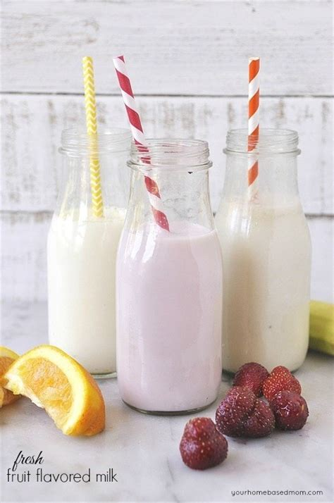

Fruit Milk

- Prep Time : 5 mins
- Total Time : 5 mins
- Serving : 2
Ingredients
- 1 cup strawberries
- 1 banana
- ½ cup yogurt
- ¼ cup pineapple juice
- 1 ½ teaspoons white sugar
Directions
Step 1
Combine strawberries, banana, yogurt, pineapple juice, sugar,
orange juice, and milk in a blender; blend until smooth.
Return Main